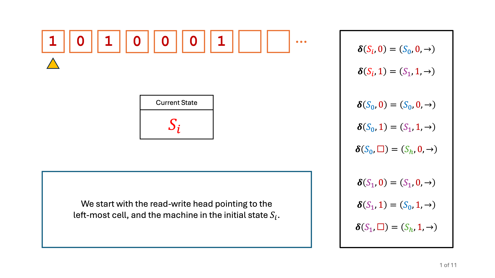
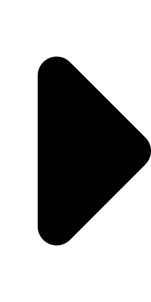
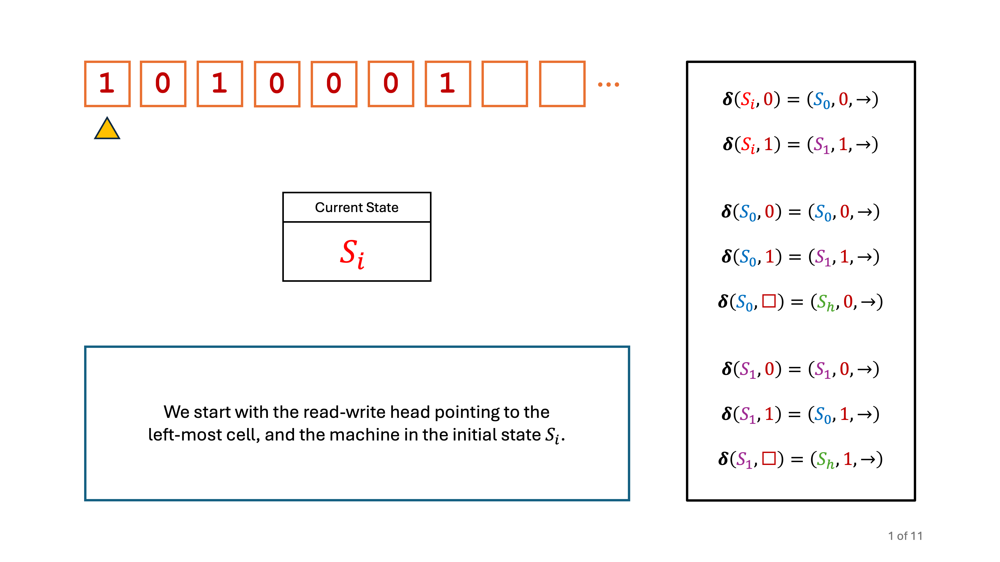
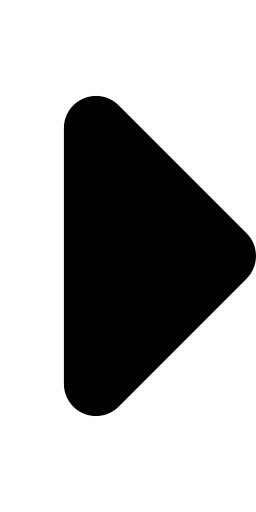
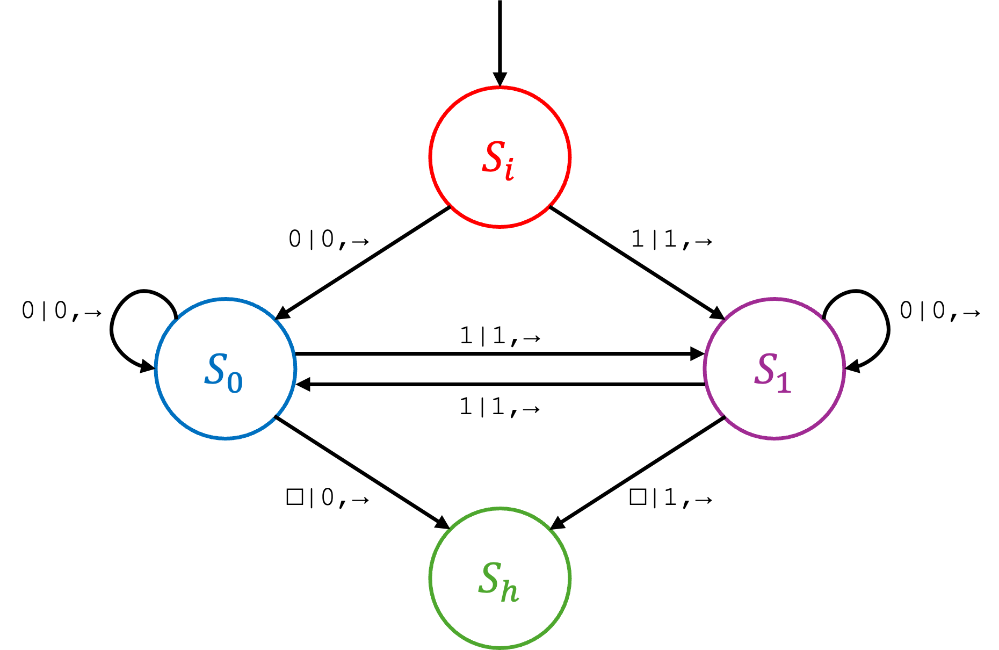

GCSE Link: None
 Turing machines allow us to define the limits of computability by providing a formal model of computation.
Turing machines allow us to define the limits of computability by providing a formal model of computation.
That is, if a problem can be solved computationally then there is (theoretically) a Turing machine which can be created to solve that problem.
A Turing machine consists of an infinitely long tape, a read-write head and a
transition function (which governs the movement and output of the read-write head). The machine
is in one of a finite number of states at any given point in time. Each cell on the tape either
contains a single symbol or is left blank (denoted as a hollow box, □).
The transition function is made up of a number of transition rules, each of which is of the format
δ(CurrentState, Input) =
(NextState, Output, Movement).
For example, the transition rule δ(S0, a) =
(S1, b, →)
means "If the machine is currently in state S0 and reads an 'a', then
switch to state S1, write a 'b' and move to the right".
Note: beyond A Level, the tape is usually shown as infinite in both directions, but for the A Level exam
you will only be shown tapes that are infinite on the right and not the left.
Diagram 1 shows a step-by-step animation of a Turing machine which computes the even parity bit of a string of bits. Use the arrows to navigate.
 Diagram 1
Diagram 1
 



But a Turing machine is really just a finite state machine with a tape! To account for this, we
write input|output,direction next to the arrows, like 0|0,→.
 A Universal Turing Machine (UTM) is a Turing machine that can simulate any other Turing machine.
A Universal Turing Machine (UTM) is a Turing machine that can simulate any other Turing machine.
It is basically an interpreter of Turing machines. It takes a description of another Turing machine along with its input and mimics its behaviour.
 Draw a finite state machine which is equivalent to the Turing machine shown in Diagram 1.
Draw a finite state machine which is equivalent to the Turing machine shown in Diagram 1.
